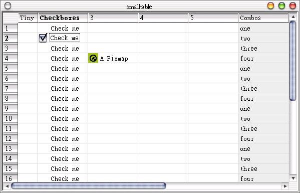

製
作統計軟體或是資料庫列示軟體時，會使用到表格將資料列出或使用圖表進行資料設定，在Qt中我們可以使用QTable類別，Qt的線上範例中，提供了三個
有關於QTable的程式，在這邊我們介紹其中一個small-table-demo，以下是這個程式的主程式內容：
#include <qapplication.h>
#include <qtable.h>
#include <qimage.h>
#include <qpixmap.h>
#include <qstringlist.h>
// Qt logo: static const char *qtlogo_xpm[]
#include "qtlogo.xpm"
// Table size
const int numRows = 30;
const int numCols = 10;
// The program starts here.
int main( int argc, char **argv )
{
QApplication app( argc, argv );
QTable table( numRows, numCols );
// 水平欄位名稱
QHeader *header = table.horizontalHeader();
header->setLabel( 0, QObject::tr( "Tiny" ), 40 );
header->setLabel( 1, QObject::tr( "Checkboxes" ) );
header->setLabel( 5, QObject::tr( "Combos" ) );
header->setMovingEnabled(TRUE); // 可以改變大小
QImage img( qtlogo_xpm );
QPixmap pix = img.scaleHeight( table.rowHeight(3) );
table.setPixmap( 3, 2, pix ); // 顯示ICON
table.setText( 3, 2, "A Pixmap" ); // 顯示文字
QStringList comboEntries;
comboEntries << "one" << "two" << "three" << "four";
for ( int i = 0; i < numRows; ++i ){
// 表格內容可以下拉選擇
QComboTableItem * item =
new QComboTableItem( &table, comboEntries, FALSE );
item->setCurrentItem( i % 4 );
table.setItem( i, 5, item );
}
// 表格內容為核取方塊選項
for ( int j = 0; j < numRows; ++j )
table.setItem( j, 1, new QCheckTableItem( &table, "Check me" ) );
app.setMainWidget( &table );
table.show();
return app.exec();
}
這個程式相當簡單，一些重要的方法已經使用註解加以說明了，以下為這個程式的執行結果：

|
|